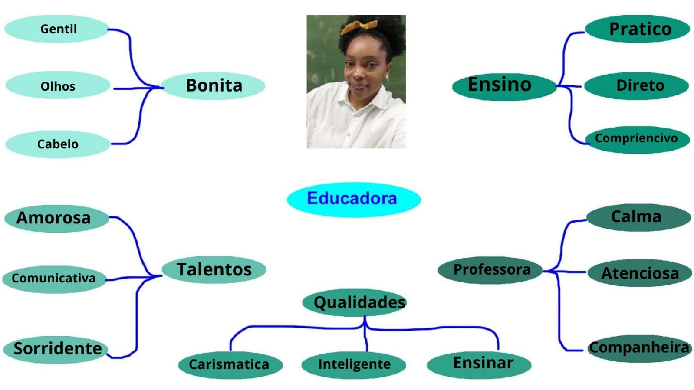
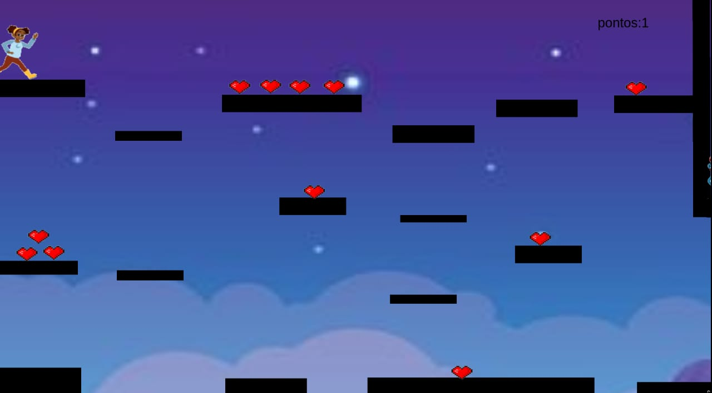
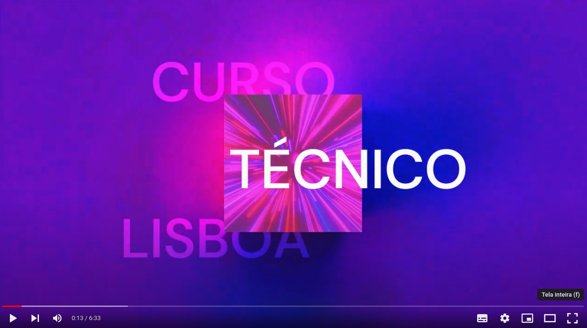

Formação Acadêmica: Está finalizando Doutorado.
Do Que trabalhou: Já trabalhou na Vivo, supermercado Muffato e vendendo bolão da megasena.
Para quais turmas do técnico dá aula e quais as matérias: 2º TDS = Biologia e Ciências para os
8º anos.


Clique na imagem acima para jogar um produzido especialmente para a professora
Marinalva!

Clique na imagem acima para assistir um video sobre o nosso projeto!
Querida Professora Marinalva,
Espero que esta carta encontre você bem. Estou escrevendo para expressar minha gratidão por todo
o seu
trabalho como nossa professora de biologia este ano. Desde o primeiro dia de aula, sua paixão
pela
matéria e seu compromisso com nosso aprendizado foram evidentes em cada lição que
ministrou.
Suas aulas não são apenas informativas, mas também inspiradoras. A maneira como você relaciona
os
conceitos complexos da biologia com exemplos do mundo real torna tudo mais compreensível e
interessante
para nós. Suas histórias e experiências de campo realmente trazem a ciência à vida.
Além de ser uma excelente educadora, você também é uma mentora incrível. Sua paciência ao
responder
nossas dúvidas e sua disposição para ajudar, mesmo fora do horário de aula, não passam
despercebidas.
Você realmente se preocupa com nosso progresso acadêmico e pessoal, e isso significa muito para
todos
nós.
Gostaria de agradecer especialmente por incentivar meu interesse pela biologia. Antes de entrar
em sua
classe, eu não tinha ideia de como a biologia poderia ser fascinante. Agora, graças a você,
estou
considerando seguir uma carreira nessa área.
Seu impacto vai muito além do conteúdo das aulas; você está moldando o futuro de seus alunos de
uma
maneira que poucos podem. Sua dedicação e paixão são verdadeiramente inspiradoras, e sou
imensamente
grato por ter tido você como minha professora este ano.
Desejo-lhe todo o sucesso contínuo em sua carreira. Que você continue inspirando e capacitando
mais
mentes jovens, assim como fez comigo.
Com toda a gratidão,
José Lucas Sena Blasques Coutinho 2 TDS
“Educação é a arma mais poderosa que você pode usar para mudar o mundo.”
Emily Eduarda da Silva Rosa - 4º INFO
 Clique na imagem acima para dar sua opinião sobre nosso projeto!
Clique na imagem acima para dar sua opinião sobre nosso projeto!